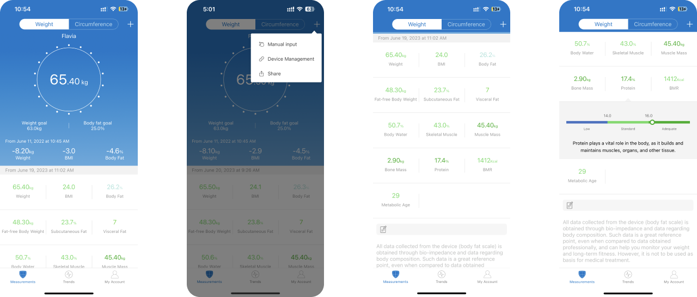

UI
Renpho - Mobile Case Study
Langara College Project
Project Overview
The Renpho App shows all the data from their Smart Scale in this modular grid.
However, Apple Health App also retrieves the data from Renpho app, and some users might use the one from Apple to have a better experience.
Problem Statement
How the user can access the data in a straightforward, but also in an appealing way?
Before

Solution
I kept the color code for the indicators without compromising the contrast (like the original version).The cards are clickable, and that’s why I reinforce their affordance in my redesign without adding drop shadows.
The plus button is now a floating button, and option like “sharing” should be more visible in apps like this. I haven’t notices the “share” button until I start this study (and I’m using the app for more than one year).